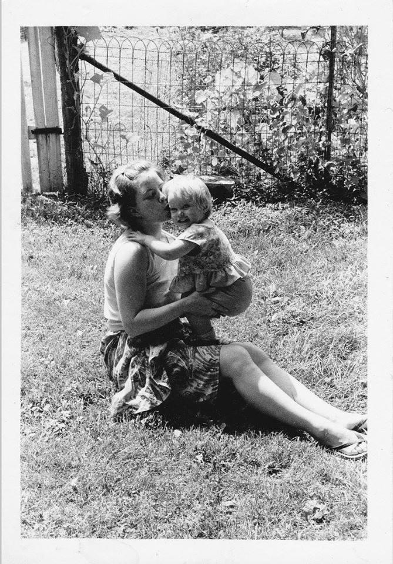

Mary Ellison
A woman who made a difference

Mary with her daughter
Here´s few things about this wonderful being:
- She became part of an applied philosophy in 1977, and was a dedicated, productive member of our beautiful social betterment group from that moment forward.
- She was on staff at the DC org for almost 30 years.
- She was an auditor.
- She was a Course Supervisor in the Academy.
- She was a Word Clearer.
- She was an Ordained Minister and performed several marriage ceremonies.
- She was on staff at Chesapeake Academy (the Applied Scholastics school in Virginia) for five years, and during that time she was a teacher, then the Vice Principal, and then the Principal.
- She was an artist. I will post pictures of her paintings and drawings at a later time.
- She always burned grilled cheese sandwiches, but she made the best popcorn I've ever had (how did she get it to taste so good?? To this day, li>I don't know).
- She loved to read.
- When I was seven or eight, I was "addicted" to TV. She coaxed me into reading by paying me 2 cents per page of my picture books. When I graduated to novels, she paid me a dollar a book. When I started reading more than a novel a day, she told me I was on my own; from then on, the joy of reading was its own payment for me.
- She could toss an orange up in the air and catch it behind her back.
- She worked harder and with fewer complaints than anyone I have ever met.
- When she broke her arm falling down the stairs a few years ago, we decided to tell people that she'd broken it when she'd stopped a bar fight, and "you should've seen the other guys!"
- Three days ago we talked about going to Saint HIll together in the spring.
- From the moment I was conceived to the moment she last breathed life into her body, she was my confidante, my nutritionist, my sing-a-long partner, my teacher, my cheerleader, my best friend. She was my Mom, and she will always be one of my very, very favorite beings.
I love you, Mom. Endless, unwavering thanks for everything you have done for me and for others. You truly made this lifetime count. I will do my best to follow your exampleMisha Crews -- her loving daughter